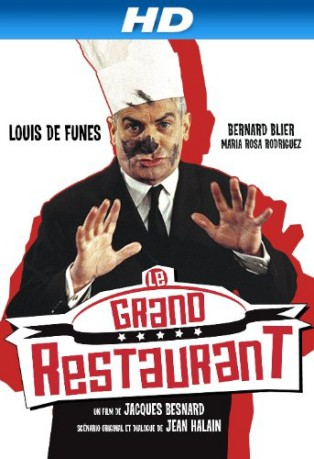

#3450 Das Große Restaurant
Alternativ: Scharfe Kurven für Madame
 
 IMDB-Wertung: 6.8 / 10
IMDB-Wertung: 6.8 / 10  Metascore: 0
Metascore: 0 
M. Septime rules the renowned Paris restaurant "Chez Septime" with an iron fist. Grovelling before his rich and powerful customers, M. Septime feels free to treat his employees like children at best or like slaves at worst. M. Septime would be very happy if things just continued the way they are. But Destiny will have it otherwise. Indeed one day, Novales, a South American president, disappears while dining in his restaurant and it looks as if Septime has something to do with it.
Jahr: 1966
Dauer: 87 Minuten
FSK: 6
Land: Frankreich Studio: Inter-Verleih Film-GesellschaftTonspuren:
Untertitel:
Auflösung: 1080p (1920x816) Größe: 6717 MB
Genre: Action, Komödie
Regisseur: Jacques Besnard
Drehbuch: Tim Talbott
Soundtrack:
Darsteller:
 Louis de Funès als Monsieur Septime
Louis de Funès als Monsieur Septime Bernard Blier als Le commissaire divisionnaire
Bernard Blier als Le commissaire divisionnaire- Maria-Rosa Rodriguez als Sophia
 Venantino Venantini als Henrique
Venantino Venantini als Henrique- Juan Ramírez als Le général
 Noël Roquevert als Le ministre
Noël Roquevert als Le ministre- Folco Lulli als Le président Novalès
- Yves Arcanel als Henri
- René Berthier als
- Albert Dagnant als Un conspirateur
 Robert Dalban als Le conspirateur francais
Robert Dalban als Le conspirateur francais- Eugene Deckers als Le complice de Novalès
- Robert Destain als Le baron
- Bernard Dumaine als Le client satisfait
 Jacques Dynam als Un serveur
Jacques Dynam als Un serveur- Guy Grosso als Un serveur
- Jacques Legras als L'agent de police
- Roger Lumont als Un dîneur
- Henri Marteau als Le second inspecteur adjoint
 Michel Modo als Petit Roger, un serveur
Michel Modo als Petit Roger, un serveur- Max Montavon als Le violoniste
 Paul Préboist als Le sommelier
Paul Préboist als Le sommelier- Julian Ramirez als
- Pierre Roussel als Un serveur
- France Rumilly als La baronne
- Frédéric Santaya als Un conspirateur
- Pierre Tornade als Un maître d'hôtel
- André Badin als Le dîneur avec le ministre , uncredited
- Jack Berard als Le portier , uncredited
 René Bouloc als Un serveur , uncredited
René Bouloc als Un serveur , uncredited- Roger Caccia als Le pianiste , uncredited
- Adrien Cayla-Legrand als Un dîneur , uncredited
- Olivier De Funès als Marmiton Louis , uncredited
- Raoul Delfosse als Le chef cuisinier , uncredited
- Jean Droze als Un serveur , uncredited
- Yves Elliot als Un maître d'hötel , uncredited
- Paul Faivre als Le monsieur taché , uncredited
- Henri-Jacques Huet als Bit part , uncredited
- Jean Ozenne als Un maître d'hôtel , uncredited
- Maurice Risch als Julien, un serveur , uncredited
Datei: X:\Person\Louis de Funès\Große Restaurant, Das (1966, FSK6, 1920x816).mkv seit 08.04.2016
Festplatte: HD Collection-7+mehr(A-Z)+Person
 Es gibt insgesamt 33 Filme in der Gruppe 'Person\Louis de Funès'
Es gibt insgesamt 33 Filme in der Gruppe 'Person\Louis de Funès'